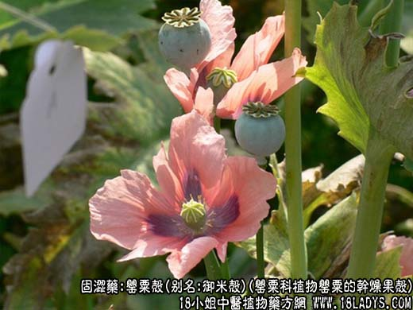
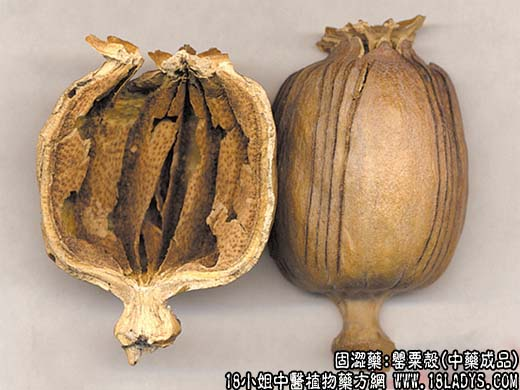
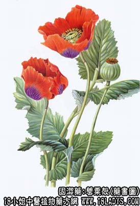

别名：御米壳、粟壳。
来源：为罂粟科植物罂粟的干燥果壳，其种子、嫩苗亦供药用。均有栽培。
产地：原产欧洲南部及亚洲地区，现国内有种植。
性状鉴别：果壳呈椭圆形或瓶装卵形，有时破碎成片状。外表面黄白色或浅棕色，有纵向或横向的割痕，顶端有11~12条突起的残留柱头，放射状排列，呈圆盘状。茎部有短柄。果皮坚脆，木质。破开后内表面浅黄色，微有光泽，并有十几条假隔膜，上有棕黑色小点，为种子脱落的残痕，质轻而脆。气清香，味微苦。
以个大、色黄白，质坚皮厚者为佳。
主要成分：壳含吗啡、可待因、蒂巴因、那可汀、罂粟碱及罂粟壳碱，生物碱等。
功效与作用：1、罂粟壳含吗啡、那可汀、可待因，故有镇静及镇痛作用。
2、能降低咳嗽中枢的兴奋性，抑制咳嗽反射，故有镇咳作用。
此外，罂粟壳还能抑制肠管蠕动而止泄泻。
炮制：切丝，蜜制。
性味：酸、平。
归经：入肺、肾、大肠经。
功能：敛肺止咳、涩肠、定痛。
主治：久咳、久泻、脱肛、便血、滑精。
临床应用：罂粟壳味酸涩，入肺、肾、大肠经。功专收敛，既能敛肺止咳，又能涩肠止泻，故可治肺虚久嗽，或久泻久痢之症。
此外，罂粟壳止痛功效亦很显著，对胃脘疼痛，疗效尤佳。由于性极收敛，为治标之药，故泻痢或咳嗽初起者忌服。
使用注意：（《得配本草》）：“初起痢疾或咳嗽忌用。”
用量：2.4~6g，或入丸、散。
处方举例：1、小百劳丸（《宣明论方》）：治劳伤喘嗽不止，自汗者，罂粟壳不拘多少，炒为末，每服6g，如乌梅同煎，温服，食后有汗，加小麦30g，同煎温服。
2、罂粟散（《普济方》）：治小儿新久吐泻，不思乳食或成白痢；罂粟壳30g（炒），诃子30，缩砂仁6g，制甘草6g，上为末，三岁服1.5g，米饮食前服。